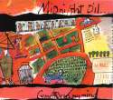
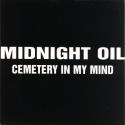

|  |
|  |
{kind=link}
{kind=link}
Cemetery In My Mind
- CD Aus
- Cemetery In My Mind
- Cemetery In My Mind (True Believers Blind Version)
- Heaven and Earth
- Devilfish Shuffle
- CD Promo Aus
- Cemetery In My Mind

14th September 1998.
All tracks by Midnight Oil (Sprint Music, Sony/ATV Music Publishing) Cover Art by Wart.
From the 1998 album Redneck Wonderland.
Track 1 produced by Warne Livesey and Midnight Oil. Mixed by Warne Livesey and Brent Clark.
Tracks 2,3 and 4 produced by Magoo and Midnight Oil. Mixed by Magoo.
All tracks mastered by Tim Young at Metropolis, London.
Locked in the mall in a state of fright Looking for salvation in a car headlight But you can't have what you can't buy Tomorrow is better than yesterday, Tomorrow is better than today, Tomorrow is better than yesterday they say Cemetery in my mind Cemetery in my mind This must be my time Wake work drink sleep retire Tide comes up way too high You can fall but can you rise Cemetery in my mind, You can fall but can you rise There's no pulse no sign of life, Cemetery in my mind.